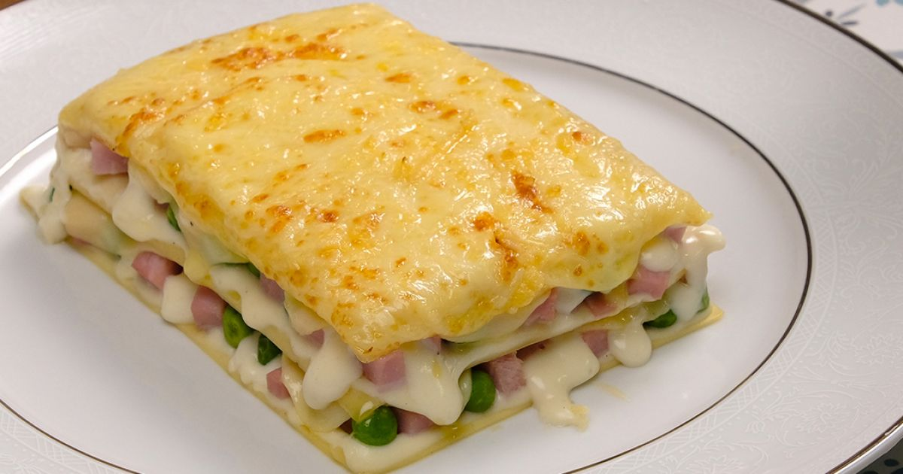

Home
Receita de lasanha

Receita de pizza de peperroni para comer com amigos e família.
É uma receita simples que qualquer um é capaz de fazer, é extremamente gostosa e garanto que você ficará satisfeito(a).
Ingredientes:
- Massa de lasanha
- 2 caixas de creme de leite
- 3 colheres de farinha de trigo
- Mussarela
- Carne moida
- manteiga
- presunto
- molho de tomate
- cebola
- Queijo
Modo de Preparo
Passo 1
- Cozinhe a massa segundo as orientações do fabricante, despeje em um refratário com água gelada para não grudar e reserve.
Passo 2
- Derreta a margarina, coloque as 3 colheres de farinha de trigo e mexa.
Passo 3
- Despeje uma parte do molho à bolonhesa em um refratário, a metade da massa, a metade do presunto, a metade da mussarela, todo o molho branco e o restante da massa.
Passo 4
- Repita as camadas até a borda do recipiente.
Passo 5
- Finalize com o queijo ralado e leve ao forno alto (220° C), preaquecido, por cerca de 20 minutos.